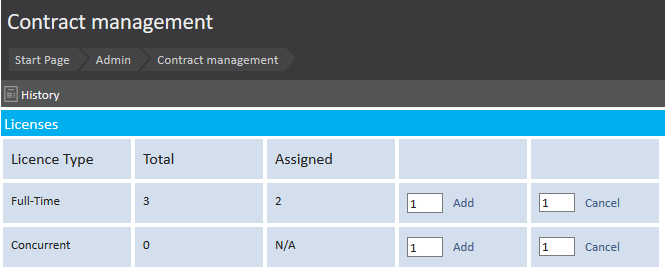
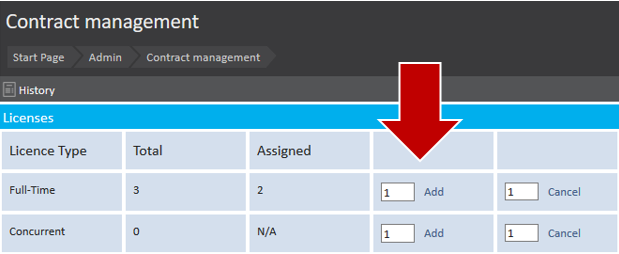
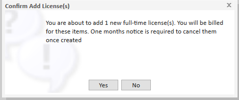
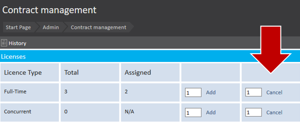
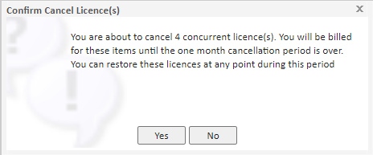
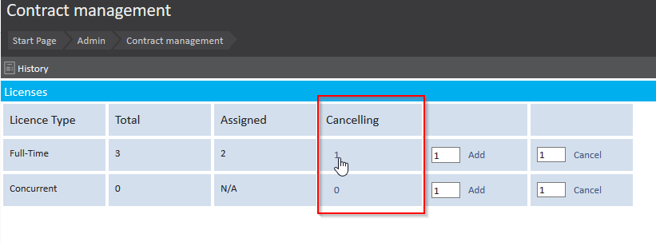

To access Meddbase, a user will need to be assigned a licence. Licences can be added and removed by users with the correct permissions (typically a system administrator).
When talking about Meddbase licences the term seat is sometimes also used and referred to in contracts.
This article is designed to explain what licences and seats are so that those with the correct permissions (typically system administrators) are able to manage the licences, and therefore the seats, that have been allocated to their organisation.
This article is split into the following sections:
Once a user has been added to your chamber, that user will need to be assigned a licence to log in. What type of licence they are allocated will depend on your needs.
More information on how to add users to your chamber can be found here: Adding Users.
You may hear 'seats' being referred to when discussing licences.
Seats can be split into two licence types: Full time and Concurrent. These licences have the following seat value associated with them:
Although one concurrent licence is equal to two seats, you may assign multiple users to a concurrent licence. More information is available below under Licence Types.
As mentioned above, there are two types of licences available for Meddbase users, these are:
Full Time:
This licence can only be applied to one user and is not shared. This simply allows one user to access the system at any given time. This type of licence is usually applied to users who are on the system more regularly and are the equivalent of one seat.
Once a full time licence has been assigned to a user, that licence will be locked to that user for 60 hours. Once the 60 hours have lapsed, a user with the correct permissions may remove the licence and reassign it as necessary.
Concurrent:
This licence allows for more than one user to use this licence as long as, no more users than concurrent licences held by an organisation are being used at any one time. Concurrent licences can be assigned to multiple users, each having their own individual username and password. This is useful for users who may be part-time or work alternative hours and therefore would be beneficial to share the licence.
An example would be:
An organisation chooses to use four seats by having two concurrent licences. (Each concurrent licence is the equivalent of two seats). There could be five users allocated a concurrent licence within this organisation, but only two can be logged on at any given time.
There are no restrictions or differences with these two licence types other than the fact that concurrent licences can be shared and are the equivalent of two seats. This also means that the concurrent usually cost more based on the fact that it can be shared amongst multiple users.
Licences can be managed by Meddbase users with the correct security permissions. To do so, please navigate from the Start Page to:

Here you can see the total Licences and how many are assigned within your chamber.
You also have the ability to Add or cancel licences here.
To add licences to your chamber simply enter in the number of licences you wish to add and then click "Add".

Please note that adding licences will affect your invoice as Meddbase costing is done on a per licences bases.

To cancel the amount of licences available in your chamber simply enter in the number of licences you wish to cancel and then click "Cancel".

Similarly to adding licences, cancelling licences will affect your invoice with Meddbase. Please contact us if you wish to find out more about your particular billing.

Cancelled licences can be restored within 30 days of cancellation if they were removed in error. This can be done by clicking the number under "Cancelling" allowing you to restore this licence without affecting your invoice.

If the 30 day time period has expired you can add a licence in the normal way mentioned above.
Once you have added your licences you can assign them to your relevant users; see Assigning a Licence.
Alternatively, if you wish to remove a licence from users to cancel them or to apply them to different users, see Removing a licence.